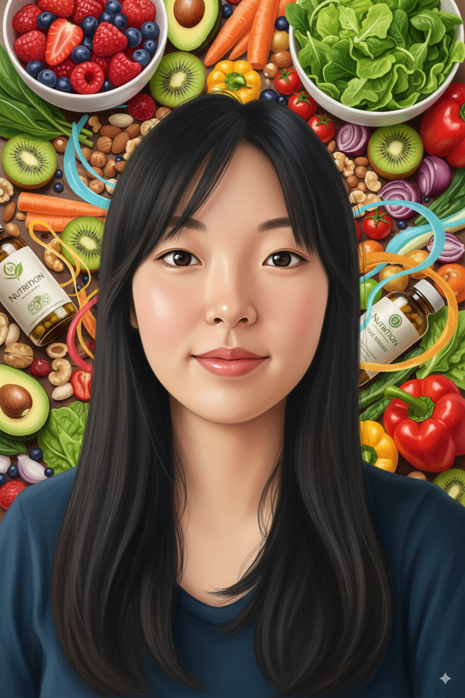
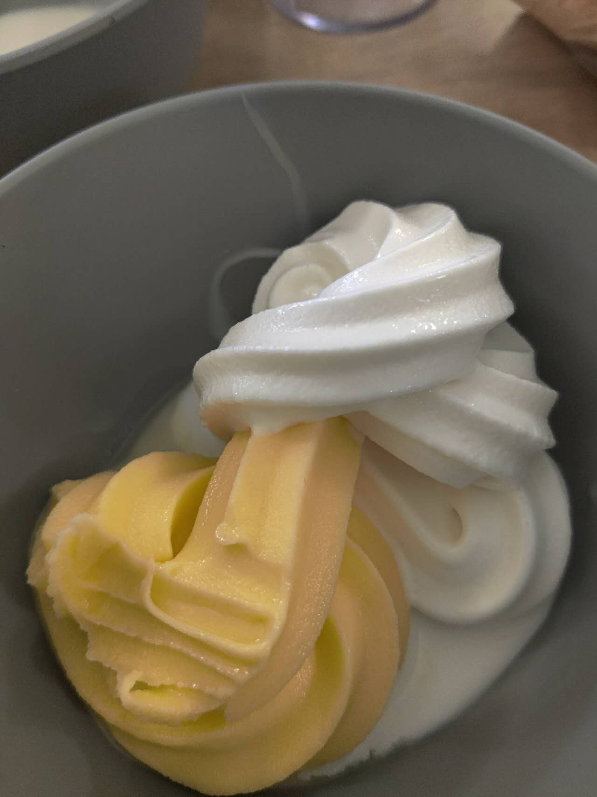
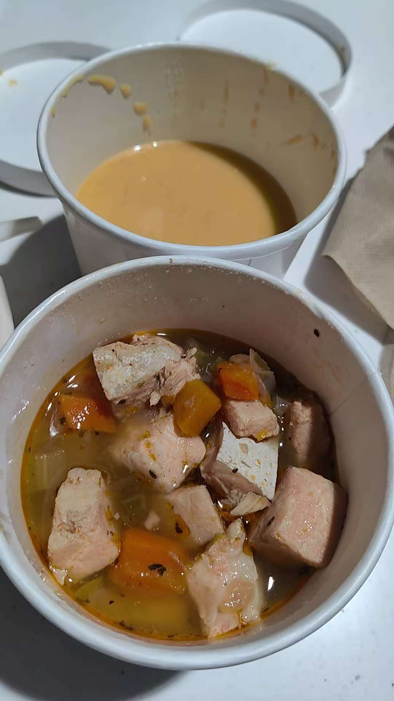

How to Play
Drag each food to its food group, or select a food and then choose a basket. Keyboard explorers: use Tab and Enter.
Sort all 15 foods correctly to win!
A PERSONAL FIELD GUIDE TO LIVING WELL
Nutrition, culture, and the lovely things in between.
Come for a story. Stay for a little discovery.


A taste of everyday life ↗01 — 04 / CHOOSE A LITTLE DETOUR
No right route. Just four corners of my world,
and something to discover in each.
Life, travels, and thoughts. Follow a little pig through the pages of my journal.
Take the scenic route →Street food, familiar flavors, and the stories behind the things we eat.
Find your next craving →
delicious little memoriesA visual diary of food adventures. The everyday, the unexpected, the delicious.
Leaf through the collection →Research, experiments, and projects at the intersection of science and everyday life.
See what I’m working on →Hi, I’m Tina — the creator of this space and a lifelong nutrition enthusiast. I’m here to share my personal journey toward healthy living in everyday life.
I believe that healthy eating should be about joy, not restriction. Take a look around my little world and feel free to connect with me. I can’t wait to hear from you!
Enjoy the journey! 💚
“Make room
for the things
that nourish you.”
The food group sorting game. A small challenge for your curious side.
Drag each food to its food group, or select a food and then choose a basket. Keyboard explorers: use Tab and Enter.
Sort all 15 foods correctly to win!
You scored 0 points!
You sorted all the foods correctly!